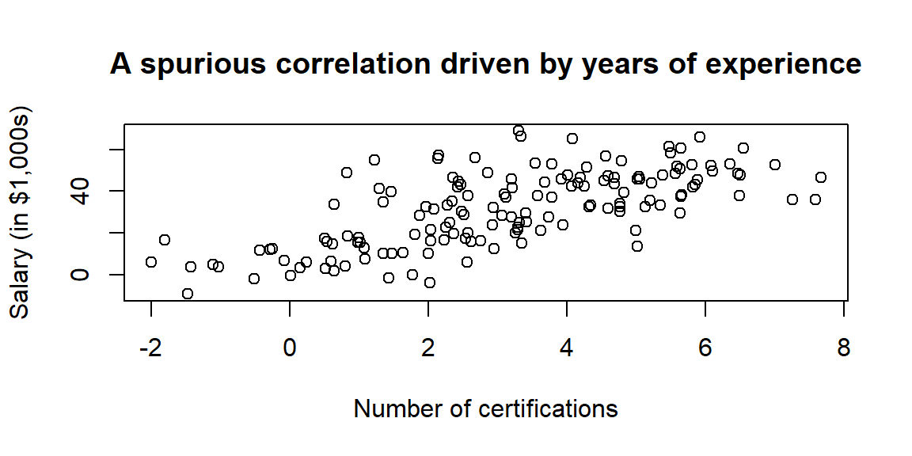
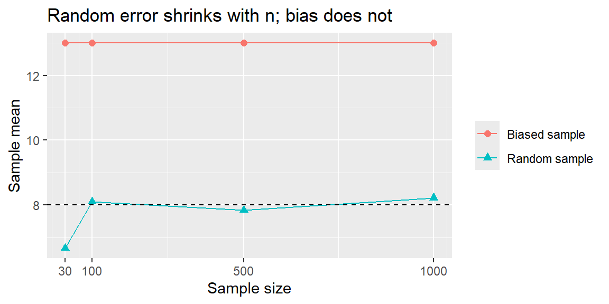
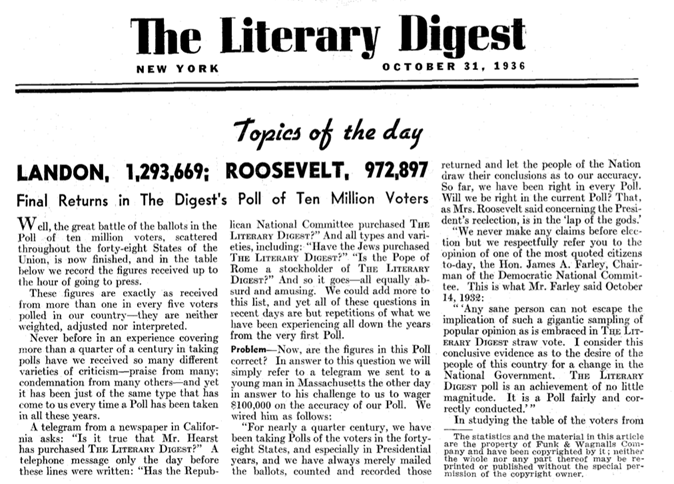
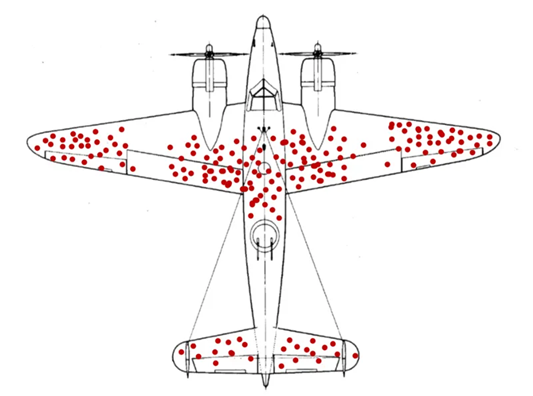

19 Week 7: Research Design, Bias, and Causality
19.1 Why This Matters
Every tool from this module, one-sample and two-sample tests, paired comparisons, ANOVA, answers the same underlying question: is the pattern in this data more than we’d expect from chance alone? But a statistically significant result only tells you the pattern is probably real; it says nothing about why the pattern exists. Before we tackle the Google Project Oxygen case, which asks whether the evidence really supports the claim that “managers matter,” we need one more layer of judgment: how the data was collected determines what conclusions it can support, regardless of how clean the statistics look. A perfectly executed hypothesis test on badly collected data still produces a badly supported conclusion.
19.2 Observational Studies vs. Experiments, Revisited
Recall the core distinction from earlier in the course: in an observational study, researchers record what happens without assigning who gets what; in an experiment, researchers actively assign a treatment and compare the results. Two common observational designs come up often in business:
- A cohort study follows a group sharing some characteristic over time, comparing outcomes between those exposed to a factor and those not. A company tracking MBA graduates’ salary growth over 10 years, comparing those who took on student debt to those who didn’t, is a cohort study.
- A case-control study compares people with an outcome of interest (“cases”) to similar people without it (“controls”), looking backward for differences. A bank comparing defaulted loans to repaid loans, looking for differences in application characteristics, is a case-control study.
Both are often the only practical way to study a question, but both share the same fundamental limitation: confounding.
ExampleExample 7.3: A confounded association
A company observes that employees who use standing desks take fewer sick days than employees who don’t, and is tempted to conclude the desks improve health. But employees who request a standing desk in the first place may already be more health-conscious overall, exercising more, sleeping better, eating better, regardless of the desk. Here, “health-consciousness” is a confounder: a third factor that influences both who gets a standing desk and how many sick days someone takes, creating an association between desks and sick days that has nothing to do with the desk itself.
Confounding can create a spurious relationship out of two variables that don’t affect each other at all, as long as both are driven by some shared third cause:
Certifications and salary appear strongly related here, but neither one drives the other; both are simply driven by years of experience. Whenever you see an observational association, it’s worth asking: is there a plausible third variable driving both sides of this relationship?
NoteRandomization is what actually fixes this
Randomization is the only tool that eliminates confounding, because it balances both measured and unmeasured factors across groups automatically, on average. Statistical adjustments in observational data (controlling for known variables in a regression, matching on observed characteristics) can reduce confounding from factors you thought to measure, but they can never rule out confounders you didn’t think to record. This is exactly why experiments, when feasible, are the gold standard for causal claims, and why observational evidence alone can never fully settle a causal question.
19.3 Principles of Good Experimental Design
When an experiment is feasible, four principles make it trustworthy:
- Randomization: assigning units to treatment conditions by chance, so that groups are comparable on average, both on factors you thought to measure and ones you didn’t.
- Control: comparing the treatment against a meaningful baseline, a control group receiving no treatment, the current standard, or a placebo, so the effect of the treatment itself can be isolated.
- Replication: applying each treatment to multiple units, so ordinary random variation can be distinguished from a genuine effect. A single observation per condition can never tell the two apart.
- Blocking: grouping similar units together before randomizing within each group, when a known nuisance factor (store size, region, shift) would otherwise add noise. Blocking removes predictable variability without requiring a larger sample.
ExampleExample 7.4: Designing a training-program experiment
A company wants to test whether a new sales training program improves close rates. A well-designed version of this experiment would: randomly assign reps to the new training or the current training (randomization); compare against reps who received the current, standard training rather than no training at all (control); run the test across enough reps that ordinary week-to-week variation in close rate doesn’t masquerade as a training effect (replication); and, if reps’ offices vary widely in market conditions, first group reps by office before randomizing within each office (blocking), so office-level differences don’t add noise to the comparison.
19.4 Sources of Bias
Bias is a systematic error baked into how data is collected or measured, and unlike ordinary sampling error, it does not shrink as the sample gets bigger. A larger biased sample just produces a more confident wrong answer.

The random sample’s mean settles near the true value as \(n\) grows, exactly as the Law of Large Numbers predicts. The biased sample’s mean stays wrong no matter how large it gets, because the bias (oversampling high earners) is built into how the sample was drawn, not something more data can fix.
Some of the most common business-relevant sources of bias:
Coverage bias: part of the population is missing from the sampling frame entirely (surveying only premium customers and generalizing to all customers).
The Literary Digest’s famous 1936 presidential poll relied on telephone directories and car registration lists, thereby missing less affluent voters who tended to support Franklin Roosevelt. The sample favored wealthier respondents and badly mispredicted the election.

Nonresponse bias: the people who don’t respond differ systematically from those who do (only your most frustrated, or most delighted, customers bother to fill out a survey).
In the same 1936 survey only 25% of those sampled returned the mail-in ballot. Landon supporters were more likely to return the survey, so the results overestimated his popularity.
Voluntary response bias: people opt into a survey themselves (online reviews, call-in polls), so strong opinions dominate and moderate views go unheard.
Convenience sampling bias: the sample is whoever’s easiest to reach, not who’s representative (surveying shoppers who happen to walk by on a Tuesday afternoon).
Response (measurement) bias: the way a question is asked shapes the answer, including social desirability bias, where people overreport virtuous behavior and underreport undesirable behavior.
Survivorship bias: studying only the “survivors” and ignoring the failures, mistaking what successful cases have in common for the actual recipe for success.
Attrition bias: participants who drop out partway through a study differ systematically from those who stay, biasing whatever conclusion is drawn from the ones who remain.
NoteThe classic illustration of survivorship bias

During World War II, analysts studied returning bombers and found bullet holes clustered on the wings and fuselage, with few near the engines, and proposed reinforcing the damaged areas. Statistician Abraham Wald pointed out the flaw: the data only came from planes that survived. Planes hit in the engine likely never made it back at all. Wald recommended reinforcing the areas with the fewest holes on survivors, not the most. The same trap shows up constantly in business: studying only successful startups (or successful product launches, or top-performing employees) to find “the keys to success” ignores every company that did the exact same things and failed anyway.
19.5 From Association to Causation: A Checklist
Putting all of this together, before treating a business pattern as evidence of a causal effect, it’s worth working through a short checklist:
- Was there random assignment? If yes, confounding is much less of a concern, and a causal claim is on solid footing. If no (an observational study), any causal claim needs much more scrutiny.
- Is there a plausible confounder? Could some third factor be driving both the “cause” and the “effect” you’re looking at?
- Could bias explain the pattern instead of a real effect? Was the sample collected in a way that could systematically distort the result, regardless of confounding?
- Is the effect statistically significant, and is it practically significant? A real, non-zero effect (from a properly run hypothesis test) isn’t automatically large enough to matter for the decision at hand.
This checklist is exactly the lens we’ll apply to the Google Project Oxygen case: a study that found “better” managers were associated with better team outcomes, using observational, not experimental, data.
19.6 Recap
| Keyword | Definition |
|---|---|
| Confounding | A third factor that influences both the supposed cause and the outcome, creating a spurious association. |
| Randomization | Assigning units to conditions by chance; the only method that balances both measured and unmeasured factors across groups. |
| Control, replication, blocking | The remaining three principles of good experimental design, alongside randomization. |
| Bias | Systematic error in how data is collected or measured; unlike sampling error, does not shrink as \(n\) grows. |
| Survivorship bias | Drawing conclusions from only the “survivors” of a process, ignoring the failures that didn’t make it into the data. |
19.7 Check Your Understanding
NoteProblems
A company finds that employees who complete an optional leadership seminar are promoted at higher rates than those who don’t. Is this observational or experimental? Name a plausible confounder.
A retailer emails a satisfaction survey to all customers, and 12% respond. The company reports that 91% of customers are “satisfied or very satisfied.” What kind of bias is most likely at play here, and why might the true satisfaction rate be different?
A venture capital firm studies 50 highly successful startups to identify “common traits of success” (e.g., founders who dropped out of college, early pivots, aggressive early hiring). Explain why this study design is vulnerable to survivorship bias, and what a better design would look like.
A company wants to know whether a four-day workweek improves employee productivity. Describe what a randomized experiment testing this would look like, and explain one practical obstacle that might make a purely observational comparison more likely in practice.
TipSolutions
This is observational: employees chose whether to attend the seminar; no one was randomly assigned. A plausible confounder is underlying ambition or motivation, employees who are already more driven to advance may be both more likely to sign up for optional development and more likely to seek out promotion opportunities, regardless of what the seminar itself teaches.
This is most likely nonresponse bias (with a dose of voluntary response bias, since responding is optional): customers with strong opinions, often the most satisfied or the most upset, are more likely to bother responding, while moderately satisfied customers may not respond at all. The reported 91% may not reflect the full customer base, since the 88% who didn’t respond could feel quite differently on average than the 12% who did.
Studying only successful startups ignores every company that tried the same strategies (dropping out, pivoting early, hiring aggressively) and failed; those failures never make it into the sample. A pattern common among the successes might be equally common among the failures, in which case it isn’t actually predictive of success at all. A better design would compare successful startups to a matched sample of startups that failed, checking whether the “common traits” actually distinguish the two groups.
A randomized experiment would randomly assign some teams or employees to a four-day week and others to keep the standard five-day week, then compare productivity between the two groups after a fixed period. A practical obstacle: it may be difficult (or seen as unfair) to give some employees a four-day week and not others within the same company, and employee morale or turnover could be affected simply by who was assigned to which group, making a clean randomized rollout hard to execute in practice. This is often why companies instead compare productivity before and after a company-wide switch, an observational, before/after comparison that can’t fully rule out other things changing at the same time.